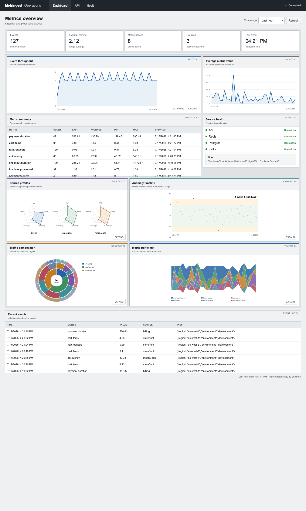
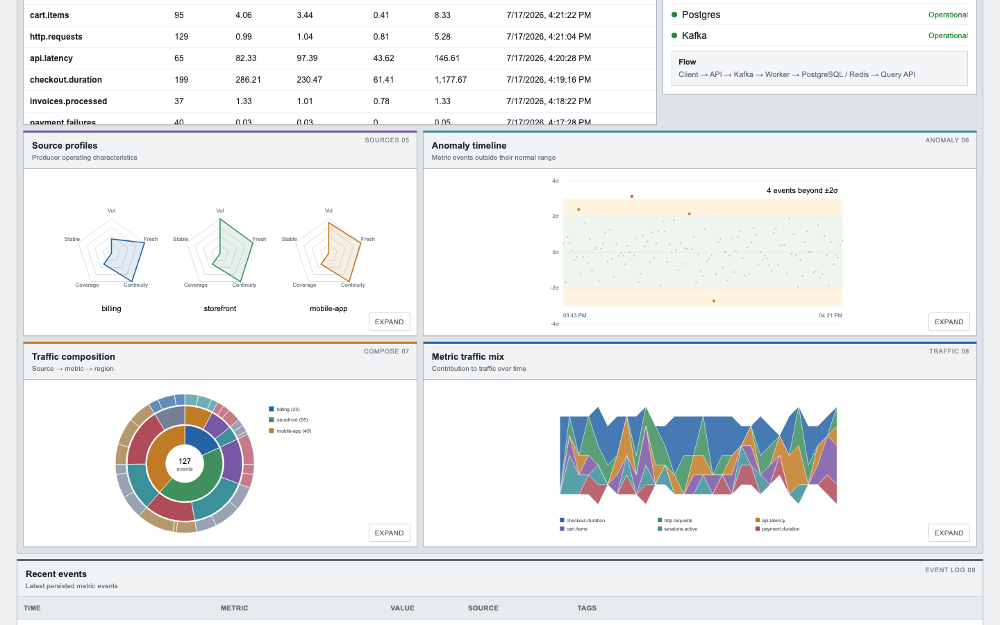
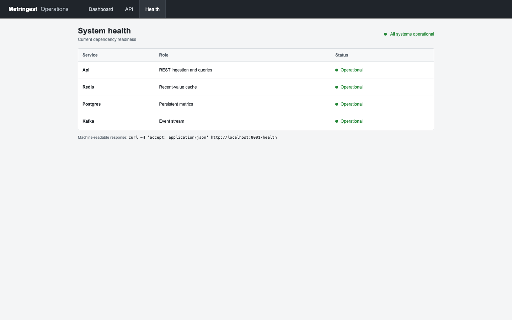
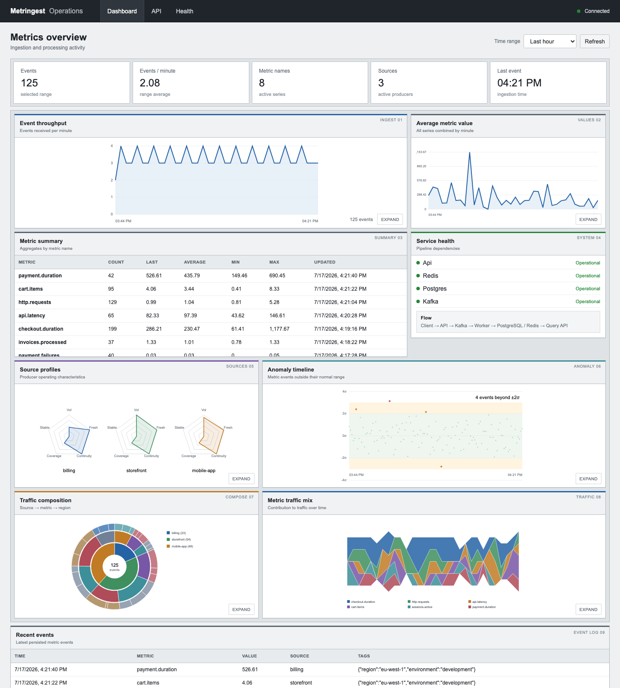
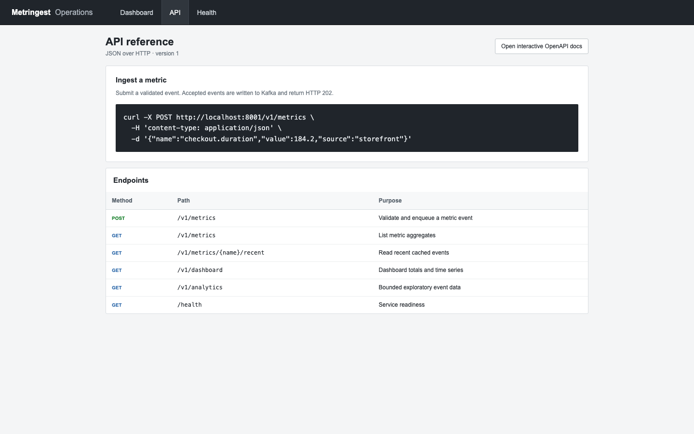

02 / Distributed Systems
Distributed Telemetry Pipeline
A production-style telemetry MVP that ingests device events, validates them asynchronously, stores history, and makes system health visible to operators.

- Focus
- Reliable event ingestion and observability
- Stack
- FastAPI · Kafka · PostgreSQL · Prometheus · Grafana · React
- Source
- Metringest on GitHub ↗
System overview
Events you can trust.
FastAPI accepts simulated device events and publishes them to Kafka for asynchronous validation. Valid records are persisted to PostgreSQL; malformed or failed records follow a dead-letter path. Prometheus metrics and a React dashboard expose both the data flow and the state of the system.
- Resilient ingestionKafka separates incoming requests from downstream validation and storage.
- Failure visibilityDuplicate, late, malformed, and failed events can be injected and inspected.
- Useful historyPostgreSQL stores validated telemetry while live operations remain observable.
- Operational feedbackPrometheus, Grafana, and the dashboard surface pipeline health and trends.




